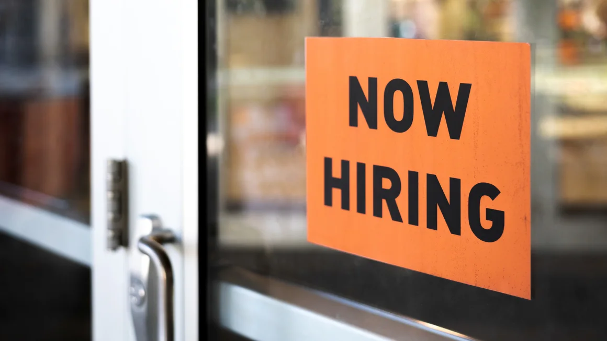

Here’s where the minimum wage is increasing this year
New York (CNN) - For anyone working a minimum wage job in this new year, they will be paid more in 22 states and in at least 40 cities and counties across the country than they were in 2023.
The higher hourly rates are due either to scheduled increases or lawmakers having indexed the minimum wage in their jurisdiction to inflation, most typically using the Consumer Price Index as their gauge.
As of January 1, seven states and the District of Columbia will have minimum wages of $15 or more, up from just four states plus DC last year. The newcomers to the category are Maryland, New Jersey and most of New York State (with the exception of New York City, Westchester and Long Island, which already had a $15 minimum in place and where the minimum wage is increasing to $16 in 2024).
State minimum wages in 2024
Twenty-two states are raising their minimum wages on January 1. But 20 states are still using the federal minimum wage of $7.25, which hasn’t gone up since 2009.
The highest state minimum wage in 2024 will be Washington state, at $16.28, up from $15.74. A close second is California, which is raising its minimum to $16 from $15.50 on January 1.
The state with the biggest jump in its minimum wage this year will be Hawaii, which is hiking it by $2.
January 1 isn’t the only day minimum wages will go up. Some states, such as Nevada and Oregon, have increases set for July 1. Florida’s minimum will go up on September 30.
(See the full list of states increasing their minimum wages below.)
Cities, counties and some industries often trump state minimums
States’ minimum wage rates are often eclipsed by those in many of their own cities and counties.
Take the city of Tukwila, Washington, just south of Seattle. Its minimum wage will hit $20.29 in January, up from $18.99 now. At that level it will have the highest standard minimum wage rate in the country among states, counties and cities as of January 1, said Jana Bjorklund, senior counsel and director of employment law and compliance at GovDocs, a compliance software provider for large, multi-jurisidiction employers.
Seattle, which with a rate of $19.97, won’t be far behind.
At least 40 cities and counties also are hiking their minimum wages, according to GovDocs. They include Flagstaff, Arizona (to $17.40); Mountain View, California (to $18.85); Denver, Colorado (to $18.29) and Portland, Maine (to $15).
And in some states, there are big sector-specific wage hikes on tap. In California, for instance, starting in April, fast food workers must be paid at least $20 an hour, and on June 1, health care workers will start earning between $18 and $23 an hour depending on their role and the size and type of employer they work for — an hourly rate that will eventually reach $25.
In New York City, app-based restaurant delivery workers (e.g., those working for Uber, Grubhub and DoorDash) now must be paid a minimum hourly rate of $17.96, which is set to increase to $19.96 by 2025.
The push for non-poverty wages
The federal minimum wage has been stuck at $7.25 since 2009. And 20 states — including Pennsylvania, New Hampshire, Alabama and Mississippi — still adhere to it.
The push to raise it has gone on for years because minimum wage workers stuck at $7.25 have lost substantial buying power.
Had it just been adjusted for inflation since 2009, it would be $10.33 today. But advocates for a higher minimum wage, including Holly Sklar, CEO of Business for a Fair Minimum Wage, would rather see it adjusted for inflation from where it was in 1968. The wage then was $1.60, which in today’s dollars would be $14.39. That $1.60 provided minimum wage workers with their greatest purchasing power, Sklar said. “Every minimum wage increase since 1968 has been too little too late. … Full-time jobs used to keep people out of poverty.”
She points to MIT’s living wage calculator to assess what a single person without kids would have to earn per hour just to cover the cost of basic needs (e.g., food, housing, transportation and medical care).
For example, in Mississippi, where the minimum wage is just $7.25, a person would have to earn $15.30 an hour in Pike County just to pay for basic needs. But among child care workers, fast food cooks and cashiers in the state, the median wage (meaning half of people in those jobs earn less) ranges between $9.83 and $10.17 an hour, Sklar noted.
Given how little movement there has been at the federal level to raise the country’s minimum wage sufficiently, she expects states and local jurisdictions will continue to do the heavy lifting.
And she believes the economic case for their increases is there for both workers and employers.
For workers, of course, “It eases the burden,” Sklar said. “People replace tires they couldn’t replace or get their kids clothes.”
For businesses, she said, consumer spending goes up because minimum wage workers will spend their additional earnings quickly. And among other things, it will help boost retention of one’s workers because they won’t be as quick to quit for another 25 cents an hour. Less turnover, in turn, can reduce an employer’s hiring and training costs, among other benefits.
“It’s a virtuous cycle,” Sklar said.
State minimum wage increases in 2024*
Alaska: $11.73, up from $10.85
Arizona: $14.35, up from $13.85
California: $16, up from $15.50
Colorado: $14.42 (proposed), up from $13.65
Connecticut: $15.69, up from $15
Delaware: $13.25, up from $11.75
Florida: $13, up from $12, on September 30
Hawaii: $14, up from $12
Ilinois: $14, up from $13
Maine: $14.15, up from $13.80
Maryland: $15, up from $13.25 for large employers and $12.80 for small employers
Michigan: $10.33, up from $10.10
Minnesota: $10.85 for large employers, up from $10.59; $8.85, up from $8.63 for others
Missouri: $12.30, up from $12
Montana: $10.30, up from $9.95
Nebraska: $12, up from $10.50
Nevada: $12, up from a $10.25 or $11.25 (depending on health benefits) – effective July 1, 2024
New Jersey: $15.13, up from $14.13
New York: $15, up from $14.20 (except in New York City, Westchester and Long Island, where it is set at $16, up from $15)
Ohio: $10.45, up from $10.10
Oregon: Its $14.20 minimum wage will adjust for inflation on July 1
Rhode Island: $14, up from $13
South Dakota: $11.20
Vermont: $13.67, up from $13.18
Washington: $16.28, up from $15.74
District of Columbia: Its $17 minimum wage will adjust for inflation on July 1
*Unless otherwise noted, changes take effect January 1